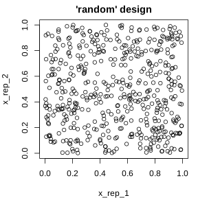
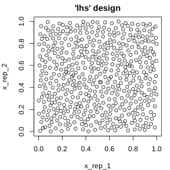

5 Technical
This chapter provides an overview of technical details of the mlr3 framework.
Parallelization
At first, some details about Parallelization and the usage of the future are given. Parallelization refers to the process of running multiple jobs simultaneously. This process is employed to minimize the necessary computing power. Algorithms consist of both sequential (non-parallelizable) and parallelizable parts. Therefore, parallelization does not always alter performance in a positive substantial manner. Summed up, this sub-chapter illustrates how and when to use parallelization in mlr3.
Database Backends
The section Database Backends describes how to work with database backends that mlr3 supports. Database backends can be helpful for large data processing which does not fit in memory or is stored natively in a database (e.g. SQLite). Specifically when working with large data sets, or when undertaking numerous tasks simultaneously, it can be advantageous to interface out-of-memory data. The section provides an illustration of how to implement Database Backends using of NYC flight data.
Parameters
In the section Parameters instructions are given on how to:
- define parameter sets for learners
- undertake parameter sampling
- apply parameter transformations
For illustrative purposes, this sub-chapter uses the paradox package, the successor of ParamHelpers.
Logging and Verbosity
The sub-chapter on Logging and Verbosity shows how to change the most important settings related to logging. In mlr3 we use the lgr package.
5.1 Parallelization
Parallelization refers to the process of running multiple jobs in parallel, simultaneously. This process allows for significant savings in computing power. We distinguish between implicit parallelism and explicit parallelism.
5.1.1 Implicit Parallelization
We talk about implicit parallelization in this context if we call external code (i.e., code from foreign CRAN packages) which runs in parallel.
Many machine learning algorithms can parallelize their model fit using threading, e.g. ranger
or xgboost.
Unfortunately, threading conflicts with certain parallel backends used during explicit parallelization, causing the system to be overutilized in the best case and causing hangs or segfaults in the worst case.
For this reason, we introduced the convention that implicit parallelization is turned off in the defaults, but can be enabled again via a hyperparameter which is tagged with the label "threads".
library("mlr3verse")
learner = lrn("classif.ranger")
learner$param_set$ids(tags = "threads")## [1] "num.threads"To enable the parallelization for this learner, we simply can call the helper function set_threads()):
# set to use 4 CPUs
set_threads(learner, n = 4)## <LearnerClassifRanger:classif.ranger>
## * Model: -
## * Parameters: num.threads=4
## * Packages: ranger
## * Predict Type: response
## * Feature types: logical, integer, numeric, character, factor, ordered
## * Properties: importance, multiclass, oob_error, twoclass, weights
# auto-detect cores on the local machine
set_threads(learner)## <LearnerClassifRanger:classif.ranger>
## * Model: -
## * Parameters: num.threads=2
## * Packages: ranger
## * Predict Type: response
## * Feature types: logical, integer, numeric, character, factor, ordered
## * Properties: importance, multiclass, oob_error, twoclass, weightsThis also works for filters from mlr3filters and lists of objects, even if some objects do not support threading at all:
# retrieve 2 filters
# * variance filter with no support for threading
# * mrmr filter with threading support
filters = flts(c("variance", "mrmr"))
# set threads for all filters which support it
set_threads(filters, n = 4)## [[1]]
## <FilterVariance:variance>
## Task Types: classif, regr
## Task Properties: -
## Packages: stats
## Feature types: integer, numeric
##
## [[2]]
## <FilterMRMR:mrmr>
## Task Types: classif, regr
## Task Properties: -
## Packages: praznik
## Feature types: integer, numeric, factor, ordered
# variance filter is unchanged
filters[[1]]$param_set## <ParamSet>
## id class lower upper nlevels default value
## 1: na.rm ParamLgl NA NA 2 TRUE
# mrmr now works in parallel with 4 cores
filters[[2]]$param_set## <ParamSet>
## id class lower upper nlevels default value
## 1: threads ParamInt 0 Inf Inf 0 45.1.2 Explicit Parallelization
We talk about explicit parallelization here if mlr3 starts the parallelization itself.
The abstraction implemented in future is used to support a broad range of parallel backends.
There are two use cases where mlr3 calls future: resample() and benchmark().
During resampling, all resampling iterations can be executed in parallelization.
The same holds for benchmarking, where additionally all combinations in the provided design are also independent.
These loops are performed by future using the parallel backend configured with future::plan().
Extension packages like mlr3tuning internally call benchmark() during tuning and thus work in parallel, too.
In this section, we will use the spam task and a simple classification tree to showcase the explicit parallelization.
In this example, the future::multisession parallel backend is selected which should work on all systems.
# select the multisession backend
future::plan("multisession")
task = tsk("spam")
learner = lrn("classif.rpart")
resampling = rsmp("subsampling")
time = Sys.time()
resample(task, learner, resampling)
Sys.time() - timeBy default, all CPUs of your machine are used unless you specify argument workers in future::plan().
On most systems you should see a decrease in the reported elapsed time, but in practice you cannot expect the runtime to fall linearly as the number of cores increases (Amdahl’s law). Depending on the parallel backend, the technical overhead for starting workers, communicating objects, sending back results and shutting down the workers can be quite large. Therefore, it is advised to only enable parallelization for resamplings where each iteration runs at least some seconds.
If you are transitioning from mlr, you might be used to selecting different parallelization levels, e.g. for resampling, benchmarking or tuning. In mlr3 this is no longer required (except for nested resampling, briefly described in the following section). All kind of events are rolled out on the same level. Therefore, there is no need to decide whether you want to parallelize the tuning OR the resampling.
Just lean back and let the machine do the work :-)
5.1.3 Nested Resampling Parallelization
Nested resampling results in two nested resampling loops. We can choose different parallelization backends for the inner and outer resampling loop, respectively. We just have to pass a list of future backends:
# Runs the outer loop in parallel and the inner loop sequentially
future::plan(list("multisession", "sequential"))
# Runs the outer loop sequentially and the inner loop in parallel
future::plan(list("sequential", "multisession"))While nesting real parallelization backends is often unintended and causes unnecessary overhead, it is useful in some distributed computing setups. It can be achieved with future by forcing a fixed number of workers for each loop:
# Runs both loops in parallel
future::plan(list(future::tweak("multisession", workers = 2),
future::tweak("multisession", workers = 4)))This example would run on 8 cores (= 2 * 4) on the local machine.
The vignette of the future package gives more insight into nested parallelization.
5.2 Error Handling
To demonstrate how to properly deal with misbehaving learners, mlr3 ships with the learner classif.debug:
## <LearnerClassifDebug:classif.debug>
## * Model: -
## * Parameters: list()
## * Packages: -
## * Predict Type: response
## * Feature types: logical, integer, numeric, character, factor, ordered
## * Properties: missings, multiclass, twoclassThis learner comes with special hyperparameters that let us control
- what conditions should be signaled (message, warning, error, segfault) with what probability
- during which stage the conditions should be signaled (train or predict)
- the ratio of predictions being
NA(predict_missing)
learner$param_set## <ParamSet>
## id class lower upper nlevels default value
## 1: error_predict ParamDbl 0 1 Inf 0
## 2: error_train ParamDbl 0 1 Inf 0
## 3: message_predict ParamDbl 0 1 Inf 0
## 4: message_train ParamDbl 0 1 Inf 0
## 5: predict_missing ParamDbl 0 1 Inf 0
## 6: predict_missing_type ParamFct NA NA 2 na
## 7: save_tasks ParamLgl NA NA 2 FALSE
## 8: segfault_predict ParamDbl 0 1 Inf 0
## 9: segfault_train ParamDbl 0 1 Inf 0
## 10: threads ParamInt 1 Inf Inf <NoDefault[3]>
## 11: warning_predict ParamDbl 0 1 Inf 0
## 12: warning_train ParamDbl 0 1 Inf 0
## 13: x ParamDbl 0 1 Inf <NoDefault[3]>With the learner’s default settings, the learner will do nothing special: The learner learns a random label and creates constant predictions.
task = tsk("iris")
learner$train(task)$predict(task)$confusion## truth
## response setosa versicolor virginica
## setosa 0 0 0
## versicolor 50 50 50
## virginica 0 0 0We now set a hyperparameter to let the debug learner signal an error during the train step. By default,mlr3 does not catch conditions such as warnings or errors raised by third-party code like learners:
## Error in .__LearnerClassifDebug__.train(self = self, private = private, : Error from classif.debug->train()If this would be a regular learner, we could now start debugging with traceback() (or create a MRE to file a bug report).
However, machine learning algorithms raising errors is not uncommon as algorithms typically cannot process all possible data. Thus, we need a mechanism to
- capture all signaled conditions such as messages, warnings and errors so that we can analyze them post-hoc, and
- a statistically sound way to proceed the calculation and be able to aggregate over partial results.
These two mechanisms are explained in the following subsections.
5.2.1 Encapsulation
With encapsulation, exceptions do not stop the program flow and all output is logged to the learner (instead of printed to the console).
Each Learner has a field encapsulate to control how the train or predict steps are executed.
One way to encapsulate the execution is provided by the package evaluate (see encapsulate() for more details):
task = tsk("iris")
learner = lrn("classif.debug")
learner$param_set$values = list(warning_train = 1, error_train = 1)
learner$encapsulate = c(train = "evaluate", predict = "evaluate")
learner$train(task)After training the learner, one can access the recorded log via the fields log, warnings and errors:
learner$log## stage class msg
## 1: train warning Warning from classif.debug->train()
## 2: train error Error from classif.debug->train()
learner$warnings## [1] "Warning from classif.debug->train()"
learner$errors## [1] "Error from classif.debug->train()"Another method for encapsulation is implemented in the callr package. callr spawns a new R process to execute the respective step, and thus even guards the current session from segfaults. On the downside, starting new processes comes with a computational overhead.
learner$encapsulate = c(train = "callr", predict = "callr")
learner$param_set$values = list(segfault_train = 1)
learner$train(task = task)
learner$errors## [1] "callr process exited with status -11"Without a model, it is not possible to get predictions though:
learner$predict(task)## Error: Cannot predict, Learner 'classif.debug' has not been trained yetTo handle the missing predictions in a graceful way during resample() or benchmark(), fallback learners are introduced next.
5.2.2 Fallback learners
Fallback learners have the purpose to allow scoring results in cases where a Learner is misbehaving in some sense.
Some typical examples include:
- The learner fails to fit a model during training, e.g., if some convergence criterion is not met or the learner ran out of memory.
- The learner fails to predict for some or all observations. A typical case is e.g. new factor levels in the test data.
We first handle the most common case that a learner completely breaks while fitting a model or while predicting on new data. If the learner fails in either of these two steps, we rely on a second learner to generate predictions: the fallback learner.
In the next example, in addition to the debug learner, we attach a simple featureless learner to the debug learner.
So whenever the debug learner fails (which is every time with the given parametrization) and encapsulation in enabled, mlr3 falls back to the predictions of the featureless learner internally:
task = tsk("iris")
learner = lrn("classif.debug")
learner$param_set$values = list(error_train = 1)
learner$encapsulate = c(train = "evaluate")
learner$fallback = lrn("classif.featureless")
learner$train(task)
learner## <LearnerClassifDebug:classif.debug>
## * Model: -
## * Parameters: error_train=1
## * Packages: -
## * Predict Type: response
## * Feature types: logical, integer, numeric, character, factor, ordered
## * Properties: missings, multiclass, twoclass
## * Errors: Error from classif.debug->train()Note that the log contains the captured error (which is also included in the print output), and although we don’t have a model, we can still get predictions:
learner$model## NULL
prediction = learner$predict(task)
prediction$score()## classif.ce
## 0.6667While the fallback learner is of limited use for this stepwise train-predict procedure, it is invaluable for larger benchmark studies where only few resampling iterations are failing. Here, we need to replace the missing scores with a number in order to aggregate over all resampling iterations. And imputing a number which is equivalent to guessing labels often seems to be the right amount of penalization.
In the following snippet we compare the previously created debug learner with a simple classification tree. We re-parametrize the debug learner to fail in roughly 30% of the resampling iterations during the training step:
learner$param_set$values = list(error_train = 0.3)
bmr = benchmark(benchmark_grid(tsk("iris"), list(learner, lrn("classif.rpart")), rsmp("cv")))
aggr = bmr$aggregate(conditions = TRUE)
aggr## nr resample_result task_id learner_id resampling_id iters warnings
## 1: 1 <ResampleResult[20]> iris classif.debug cv 10 0
## 2: 2 <ResampleResult[20]> iris classif.rpart cv 10 0
## errors classif.ce
## 1: 4 0.7133
## 2: 0 0.0800To further investigate the errors, we can extract the ResampleResult:
rr = aggr[learner_id == "classif.debug"]$resample_result[[1L]]
rr$errors## iteration msg
## 1: 1 Error from classif.debug->train()
## 2: 4 Error from classif.debug->train()
## 3: 7 Error from classif.debug->train()
## 4: 10 Error from classif.debug->train()A similar yet different problem emerges when a learner predicts only a subset of the observations in the test set (and predicts NA for others).
Handling such predictions in a statistically sound way is not straight-forward and a common source for over-optimism when reporting results.
Imagine that our goal is to benchmark two algorithms using a 10-fold cross validation on some binary classification task:
- Algorithm A is a ordinary logistic regression.
- Algorithm B is also a ordinary logistic regression, but with a twist: If the logistic regression is rather certain about the predicted label (> 90% probability), it returns the label and a missing value otherwise.
When comparing the performance of these two algorithms, it is obviously not fair to average over all predictions of algorithm A while only average over the “easy-to-predict” observations for algorithm B. By doing so, algorithm B would easily outperform algorithm A, but you have not factored in that you can not generate predictions for many observations. On the other hand, it is also not feasible to exclude all observations from the test set of a benchmark study where at least one algorithm failed to predict a label. Instead, we proceed by imputing all missing predictions with something naive, e.g., by predicting the majority class with a featureless learner. And as the majority class may depend on the resampling split (or we opt for some other arbitrary baseline learner), it is best to just train a second learner on the same resampling split.
Long story short, if a fallback learner is involved, missing predictions of the base learner will be automatically replaced with predictions from the fallback learner. This is illustrated in the following example:
task = tsk("iris")
learner = lrn("classif.debug")
# this hyperparameter sets the ratio of missing predictions
learner$param_set$values = list(predict_missing = 0.5)
# without fallback
p = learner$train(task)$predict(task)
table(p$response, useNA = "always")##
## setosa versicolor virginica <NA>
## 75 0 0 75
# with fallback
learner$fallback = lrn("classif.featureless")
p = learner$train(task)$predict(task)
table(p$response, useNA = "always")##
## setosa versicolor virginica <NA>
## 75 75 0 0Summed up, by combining encapsulation and fallback learners, it is possible to benchmark even quite unreliable or instable learning algorithms in a convenient way.
5.3 Database Backends
In mlr3, Tasks store their data in an abstract data format, the DataBackend.
The default backend uses data.table via the DataBackendDataTable as an in-memory data base.
For larger data, or when working with many tasks in parallel, it can be advantageous to interface an out-of-memory data. We use the excellent R package dbplyr which extends dplyr to work on many popular data bases like MariaDB, PostgreSQL or SQLite.
5.3.1 Use Case: NYC Flights
To generate a halfway realistic scenario, we use the NYC flights data set from package nycflights13:
# load data
requireNamespace("DBI")## Loading required namespace: DBI
requireNamespace("RSQLite")## Loading required namespace: RSQLite
requireNamespace("nycflights13")## Loading required namespace: nycflights13## tibble [336,776 × 19] (S3: tbl_df/tbl/data.frame)
## $ year : int [1:336776] 2013 2013 2013 2013 2013 2013 2013 2013 2013 2013 ...
## $ month : int [1:336776] 1 1 1 1 1 1 1 1 1 1 ...
## $ day : int [1:336776] 1 1 1 1 1 1 1 1 1 1 ...
## $ dep_time : int [1:336776] 517 533 542 544 554 554 555 557 557 558 ...
## $ sched_dep_time: int [1:336776] 515 529 540 545 600 558 600 600 600 600 ...
## $ dep_delay : num [1:336776] 2 4 2 -1 -6 -4 -5 -3 -3 -2 ...
## $ arr_time : int [1:336776] 830 850 923 1004 812 740 913 709 838 753 ...
## $ sched_arr_time: int [1:336776] 819 830 850 1022 837 728 854 723 846 745 ...
## $ arr_delay : num [1:336776] 11 20 33 -18 -25 12 19 -14 -8 8 ...
## $ carrier : chr [1:336776] "UA" "UA" "AA" "B6" ...
## $ flight : int [1:336776] 1545 1714 1141 725 461 1696 507 5708 79 301 ...
## $ tailnum : chr [1:336776] "N14228" "N24211" "N619AA" "N804JB" ...
## $ origin : chr [1:336776] "EWR" "LGA" "JFK" "JFK" ...
## $ dest : chr [1:336776] "IAH" "IAH" "MIA" "BQN" ...
## $ air_time : num [1:336776] 227 227 160 183 116 150 158 53 140 138 ...
## $ distance : num [1:336776] 1400 1416 1089 1576 762 ...
## $ hour : num [1:336776] 5 5 5 5 6 5 6 6 6 6 ...
## $ minute : num [1:336776] 15 29 40 45 0 58 0 0 0 0 ...
## $ time_hour : POSIXct[1:336776], format: "2013-01-01 05:00:00" "2013-01-01 05:00:00" ...
# add column of unique row ids
flights$row_id = 1:nrow(flights)
# create sqlite database in temporary file
path = tempfile("flights", fileext = ".sqlite")
con = DBI::dbConnect(RSQLite::SQLite(), path)
tbl = DBI::dbWriteTable(con, "flights", as.data.frame(flights))
DBI::dbDisconnect(con)
# remove in-memory data
rm(flights)
5.3.2 Preprocessing with dplyr
With the SQLite database in path, we now re-establish a connection and switch to dplyr/dbplyr for some essential preprocessing.
# establish connection
con = DBI::dbConnect(RSQLite::SQLite(), path)
# select the "flights" table, enter dplyr
library("dplyr")##
## Attaching package: 'dplyr'## The following objects are masked from 'package:stats':
##
## filter, lag## The following objects are masked from 'package:base':
##
## intersect, setdiff, setequal, union##
## Attaching package: 'dbplyr'## The following objects are masked from 'package:dplyr':
##
## ident, sql
tbl = tbl(con, "flights")First, we select a subset of columns to work on:
keep = c("row_id", "year", "month", "day", "hour", "minute", "dep_time",
"arr_time", "carrier", "flight", "air_time", "distance", "arr_delay")
tbl = select(tbl, keep)Additionally, we remove those observations where the arrival delay (arr_delay) has a missing value:
To keep runtime reasonable for this toy example, we filter the data to only use every second row:
tbl = filter(tbl, row_id %% 2 == 0)The factor levels of the feature carrier are merged so that infrequent carriers are replaced by level “other”:
5.3.3 DataBackendDplyr
The processed table is now used to create a mlr3db::DataBackendDplyr from mlr3db:
library("mlr3db")
b = as_data_backend(tbl, primary_key = "row_id")We can now use the interface of DataBackend to query some basic information of the data:
b$nrow## [1] 163707
b$ncol## [1] 13
b$head()## row_id year month day hour minute dep_time arr_time carrier flight air_time
## 1: 2 2013 1 1 5 29 533 850 UA 1714 227
## 2: 4 2013 1 1 5 45 544 1004 B6 725 183
## 3: 6 2013 1 1 5 58 554 740 UA 1696 150
## 4: 8 2013 1 1 6 0 557 709 EV 5708 53
## 5: 10 2013 1 1 6 0 558 753 AA 301 138
## 6: 12 2013 1 1 6 0 558 853 B6 71 158
## distance arr_delay
## 1: 1416 20
## 2: 1576 -18
## 3: 719 12
## 4: 229 -14
## 5: 733 8
## 6: 1005 -3Note that the DataBackendDplyr does not know about any rows or columns we have filtered out with dplyr before, it just operates on the view we provided.
5.3.4 Model fitting
We create the following mlr3 objects:
- A
regression task, based on the previously createdmlr3db::DataBackendDplyr. - A regression learner (
regr.rpart). - A resampling strategy: 3 times repeated subsampling using 2% of the observations for training (“
subsampling”) - Measures “
mse”, “time_train” and “time_predict”
task = as_task_regr(b, id = "flights_sqlite", target = "arr_delay")
learner = lrn("regr.rpart")
measures = mlr_measures$mget(c("regr.mse", "time_train", "time_predict"))
resampling = rsmp("subsampling")
resampling$param_set$values = list(repeats = 3, ratio = 0.02)We pass all these objects to resample() to perform a simple resampling with three iterations.
In each iteration, only the required subset of the data is queried from the SQLite data base and passed to rpart::rpart():
## <ResampleResult> of 3 iterations
## * Task: flights_sqlite
## * Learner: regr.rpart
## * Warnings: 0 in 0 iterations
## * Errors: 0 in 0 iterations
rr$aggregate(measures)## regr.mse time_train time_predict
## 1207 0 05.3.5 Cleanup
Finally, we remove the tbl object and close the connection.
rm(tbl)
DBI::dbDisconnect(con)
5.4 Parameters (using paradox)
The paradox package offers a language for the description of parameter spaces, as well as tools for useful operations on these parameter spaces. A parameter space is often useful when describing:
- A set of sensible input values for an R function
- The set of possible values that slots of a configuration object can take
- The search space of an optimization process
The tools provided by paradox therefore relate to:
- Parameter checking: Verifying that a set of parameters satisfies the conditions of a parameter space
- Parameter sampling: Generating parameter values that lie in the parameter space for systematic exploration of program behavior depending on these parameters
paradox is, by nature, an auxiliary package that derives its usefulness from other packages that make use of it. It is heavily utilized in other mlr-org packages such as mlr3, mlr3pipelines, and mlr3tuning.
5.4.1 Reference Based Objects
paradox is the spiritual successor to the ParamHelpers package and was written from scratch using the R6 class system.
The most important consequence of this is that all objects created in paradox are “reference-based”, unlike most other objects in R.
When a change is made to a ParamSet object, for example by adding a parameter using the $add() function, all variables that point to this ParamSet will contain the changed object.
To create an independent copy of a ParamSet, the $clone() method needs to be used:
library("paradox")
ps = ParamSet$new()
ps2 = ps
ps3 = ps$clone(deep = TRUE)
print(ps) # the same for ps2 and ps3## <ParamSet>
## Empty.
ps$add(ParamLgl$new("a"))
print(ps) # ps was changed## <ParamSet>
## id class lower upper nlevels default value
## 1: a ParamLgl NA NA 2 <NoDefault[3]>
print(ps2) # contains the same reference as ps## <ParamSet>
## id class lower upper nlevels default value
## 1: a ParamLgl NA NA 2 <NoDefault[3]>
print(ps3) # is a "clone" of the old (empty) ps## <ParamSet>
## Empty.5.4.2 Defining a Parameter Space
5.4.2.1 Single Parameters
The basic building block for describing parameter spaces is the Param class.
It represents a single parameter, which usually can take a single atomic value.
Consider, for example, trying to configure the rpart package’s rpart.control object.
It has various components (minsplit, cp, …) that all take a single value, and that would all be represented by a different instance of a Param object.
The Param class has various sub-classes that represent different value types:
-
ParamInt: Integer numbers -
ParamDbl: Real numbers -
ParamFct: String values from a set of possible values, similar to Rfactors -
ParamLgl: Truth values (TRUE/FALSE), aslogicals in R -
ParamUty: Parameter that can take any value
A particular instance of a parameter is created by calling the attached $new() function:
library("paradox")
parA = ParamLgl$new(id = "A")
parB = ParamInt$new(id = "B", lower = 0, upper = 10, tags = c("tag1", "tag2"))
parC = ParamDbl$new(id = "C", lower = 0, upper = 4, special_vals = list(NULL))
parD = ParamFct$new(id = "D", levels = c("x", "y", "z"), default = "y")
parE = ParamUty$new(id = "E", custom_check = function(x) checkmate::checkFunction(x))Every parameter must have:
- id - A name for the parameter within the parameter set
- default - A default value
- special_vals - A list of values that are accepted even if they do not conform to the type
- tags - Tags that can be used to organize parameters
The numeric (Int and Dbl) parameters furthermore allow for specification of a lower and upper bound.
Meanwhile, the Fct parameter must be given a vector of levels that define the possible states its parameter can take.
The Uty parameter can also have a custom_check function that must return TRUE when a value is acceptable and may return a character(1) error description otherwise.
The example above defines parE as a parameter that only accepts functions.
All values which are given to the constructor are then accessible from the object for inspection using $.
Although all these values can be changed for a parameter after construction, this can be a bad idea and should be avoided when possible.
Instead, a new parameter should be constructed.
Besides the possible values that can be given to a constructor, there are also the $class, $nlevels, $is_bounded, $has_default, $storage_type, $is_number and $is_categ slots that give information about a parameter.
A list of all slots can be found in ?Param.
parB$lower## [1] 0
parA$levels## [1] TRUE FALSE
parE$class## [1] "ParamUty"It is also possible to get all information of a Param as data.table by calling as.data.table.
as.data.table(parA)## id class lower upper levels nlevels is_bounded special_vals default storage_type tags
## 1: A ParamLgl NA NA TRUE,FALSE 2 TRUE <list[0]> <NoDefault[3]> logical5.4.2.1.1 Type / Range Checking
A Param object offers the possibility to check whether a value satisfies its condition, i.e. is of the right type, and also falls within the range of allowed values, using the $test(), $check(), and $assert() functions.
test() should be used within conditional checks and returns TRUE or FALSE, while check() returns an error description when a value does not conform to the parameter (and thus plays well with the checkmate::assert() function).
assert() will throw an error whenever a value does not fit.
parA$test(FALSE)## [1] TRUE
parA$test("FALSE")## [1] FALSE
parA$check("FALSE")## [1] "Must be of type 'logical flag', not 'character'"Instead of testing single parameters, it is often more convenient to check a whole set of parameters using a ParamSet.
5.4.2.2 Parameter Sets
The ordered collection of parameters is handled in a ParamSet2.
It is initialized using the $new() function and optionally takes a list of Params as argument.
Parameters can also be added to the constructed ParamSet using the $add() function.
It is even possible to add whole ParamSets to other ParamSets.
## <ParamSet>
## id class lower upper nlevels default value
## 1: A ParamLgl NA NA 2 <NoDefault[3]>
## 2: B ParamInt 0 10 11 <NoDefault[3]>
## 3: C ParamDbl 0 4 Inf <NoDefault[3]>
## 4: D ParamFct NA NA 3 y
## 5: E ParamUty NA NA Inf <NoDefault[3]>The individual parameters can be accessed through the $params slot.
It is also possible to get information about all parameters in a vectorized fashion using mostly the same slots as for individual Params (i.e. $class, $levels etc.), see ?ParamSet for details.
It is possible to reduce ParamSets using the $subset method.
Be aware that it modifies a ParamSet in-place, so a “clone” must be created first if the original ParamSet should not be modified.
## <ParamSet>
## id class lower upper nlevels default value
## 1: A ParamLgl NA NA 2 <NoDefault[3]>
## 2: B ParamInt 0 10 11 <NoDefault[3]>
## 3: C ParamDbl 0 4 Inf <NoDefault[3]>Just as for Params, and much more useful, it is possible to get the ParamSet as a data.table using as.data.table().
This makes it easy to subset parameters on certain conditions and aggregate information about them, using the variety of methods provided by data.table.
as.data.table(ps)## id class lower upper levels nlevels is_bounded special_vals default storage_type tags
## 1: A ParamLgl NA NA TRUE,FALSE 2 TRUE <list[0]> <NoDefault[3]> logical
## 2: B ParamInt 0 10 11 TRUE <list[0]> <NoDefault[3]> integer tag1,tag2
## 3: C ParamDbl 0 4 Inf TRUE <list[1]> <NoDefault[3]> numeric
## 4: D ParamFct NA NA x,y,z 3 TRUE <list[0]> y character
## 5: E ParamUty NA NA Inf FALSE <list[0]> <NoDefault[3]> list5.4.2.2.1 Type / Range Checking
Similar to individual Params, the ParamSet provides $test(), $check() and $assert() functions that allow for type and range checking of parameters.
Their argument must be a named list with values that are checked against the respective parameters.
It is possible to check only a subset of parameters.
ps$check(list(A = TRUE, B = 0, E = identity))## [1] TRUE
ps$check(list(A = 1))## [1] "A: Must be of type 'logical flag', not 'double'"
ps$check(list(Z = 1))## [1] "Parameter 'Z' not available. Did you mean 'A' / 'B' / 'C'?"
5.4.2.2.2 Values in a ParamSet
Although a ParamSet fundamentally represents a value space, it also has a slot $values that can contain a point within that space.
This is useful because many things that define a parameter space need similar operations (like parameter checking) that can be simplified.
The $values slot contains a named list that is always checked against parameter constraints.
When trying to set parameter values, e.g. for mlr3 Learners, it is the $values slot of its $param_set that needs to be used.
## $A
## [1] TRUE
##
## $B
## [1] 1The parameter constraints are automatically checked:
ps$values$B = 100## Error in self$assert(xs): Assertion on 'xs' failed: B: Element 1 is not <= 10.5.4.2.2.3 Dependencies
It is often the case that certain parameters are irrelevant or should not be given depending on values of other parameters.
An example would be a parameter that switches a certain algorithm feature (for example regularization) on or off, combined with another parameter that controls the behavior of that feature (e.g. a regularization parameter).
The second parameter would be said to depend on the first parameter having the value TRUE.
A dependency can be added using the $add_dep method, which takes both the ids of the “depender” and “dependee” parameters as well as a Condition object.
The Condition object represents the check to be performed on the “dependee”.
Currently it can be created using CondEqual$new() and CondAnyOf$new().
Multiple dependencies can be added, and parameters that depend on others can again be depended on, as long as no cyclic dependencies are introduced.
The consequence of dependencies are twofold:
For one, the $check(), $test() and $assert() tests will not accept the presence of a parameter if its dependency is not met.
Furthermore, when sampling or creating grid designs from a ParamSet, the dependencies will be respected (see Parameter Sampling, in particular Hierarchical Sampler).
The following example makes parameter D depend on parameter A being FALSE, and parameter B depend on parameter D being one of "x" or "y".
This introduces an implicit dependency of B on A being FALSE as well, because D does not take any value if A is TRUE.
ps$check(list(A = FALSE, D = "x", B = 1)) # OK: all dependencies met## [1] TRUE
ps$check(list(A = FALSE, D = "z", B = 1)) # B's dependency is not met## [1] "The parameter 'B' can only be set if the following condition is met 'D ∈ {x, y}'. Instead the current parameter value is: D=z"
ps$check(list(A = FALSE, B = 1)) # B's dependency is not met## [1] "The parameter 'B' can only be set if the following condition is met 'D ∈ {x, y}'. Instead the parameter value for 'D' is not set at all. Try setting 'D' to a value that satisfies the condition"
ps$check(list(A = FALSE, D = "z")) # OK: B is absent## [1] TRUE
ps$check(list(A = TRUE)) # OK: neither B nor D present## [1] TRUE
ps$check(list(A = TRUE, D = "x", B = 1)) # D's dependency is not met## [1] "The parameter 'D' can only be set if the following condition is met 'A = FALSE'. Instead the current parameter value is: A=TRUE"
ps$check(list(A = TRUE, B = 1)) # B's dependency is not met## [1] "The parameter 'B' can only be set if the following condition is met 'D ∈ {x, y}'. Instead the parameter value for 'D' is not set at all. Try setting 'D' to a value that satisfies the condition"Internally, the dependencies are represented as a data.table, which can be accessed listed in the $deps slot.
This data.table can even be mutated, to e.g. remove dependencies.
There are no sanity checks done when the $deps slot is changed this way.
Therefore it is advised to be cautious.
ps$deps## id on cond
## 1: D A <CondEqual[9]>
## 2: B D <CondAnyOf[9]>5.4.2.3 Vector Parameters
Unlike in the old ParamHelpers package, there are no more vectorial parameters in paradox.
Instead, it is now possible to create multiple copies of a single parameter using the $rep function.
This creates a ParamSet consisting of multiple copies of the parameter, which can then (optionally) be added to another ParamSet.
## <ParamSet>
## id class lower upper nlevels default value
## 1: x_rep_1 ParamDbl 0 1 Inf <NoDefault[3]>
## 2: x_rep_2 ParamDbl 0 1 Inf <NoDefault[3]>
ps$add(ps2d)
print(ps)## <ParamSet>
## id class lower upper nlevels default parents value
## 1: A ParamLgl NA NA 2 <NoDefault[3]> TRUE
## 2: B ParamInt 0 10 11 <NoDefault[3]> D 1
## 3: C ParamDbl 0 4 Inf <NoDefault[3]>
## 4: D ParamFct NA NA 3 y A
## 5: E ParamUty NA NA Inf <NoDefault[3]>
## 6: x_rep_1 ParamDbl 0 1 Inf <NoDefault[3]>
## 7: x_rep_2 ParamDbl 0 1 Inf <NoDefault[3]>It is also possible to use a ParamUty to accept vectorial parameters, which also works for parameters of variable length.
A ParamSet containing a ParamUty can be used for parameter checking, but not for sampling.
To sample values for a method that needs a vectorial parameter, it is advised to use a parameter transformation function that creates a vector from atomic values.
Assembling a vector from repeated parameters is aided by the parameter’s $tags: Parameters that were generated by the $rep() command automatically get tagged as belonging to a group of repeated parameters.
ps$tags## $A
## character(0)
##
## $B
## [1] "tag1" "tag2"
##
## $C
## character(0)
##
## $D
## character(0)
##
## $E
## character(0)
##
## $x_rep_1
## [1] "x_rep"
##
## $x_rep_2
## [1] "x_rep"5.4.3 Parameter Sampling
It is often useful to have a list of possible parameter values that can be systematically iterated through, for example to find parameter values for which an algorithm performs particularly well (tuning).
paradox offers a variety of functions that allow creating evenly-spaced parameter values in a “grid” design as well as random sampling.
In the latter case, it is possible to influence the sampling distribution in more or less fine detail.
A point to always keep in mind while sampling is that only numerical and factorial parameters that are bounded can be sampled from, i.e. not ParamUty.
Furthermore, for most samplers ParamInt and ParamDbl must have finite lower and upper bounds.
5.4.3.1 Parameter Designs
Functions that sample the parameter space fundamentally return an object of the Design class.
These objects contain the sampled data as a data.table under the $data slot, and also offer conversion to a list of parameter-values using the $transpose() function.
5.4.3.2 Grid Design
The generate_design_grid() function is used to create grid designs that contain all combinations of parameter values: All possible values for ParamLgl and ParamFct, and values with a given resolution for ParamInt and ParamDbl.
The resolution can be given for all numeric parameters, or for specific named parameters through the param_resolutions parameter.
design = generate_design_grid(psSmall, 2)
print(design)## <Design> with 8 rows:
## A B C
## 1: TRUE 0 0
## 2: TRUE 0 4
## 3: TRUE 10 0
## 4: TRUE 10 4
## 5: FALSE 0 0
## 6: FALSE 0 4
## 7: FALSE 10 0
## 8: FALSE 10 4
generate_design_grid(psSmall, param_resolutions = c(B = 1, C = 2))## <Design> with 4 rows:
## B C A
## 1: 0 0 TRUE
## 2: 0 0 FALSE
## 3: 0 4 TRUE
## 4: 0 4 FALSE5.4.3.3 Random Sampling
paradox offers different methods for random sampling, which vary in the degree to which they can be configured.
The easiest way to get a uniformly random sample of parameters is generate_design_random.
It is also possible to create “latin hypercube” sampled parameter values using generate_design_lhs, which utilizes the lhs package.
LHS-sampling creates low-discrepancy sampled values that cover the parameter space more evenly than purely random values.
pvrand = generate_design_random(ps2d, 500)
pvlhs = generate_design_lhs(ps2d, 500)
5.4.3.4 Generalized Sampling: The Sampler Class
It may sometimes be desirable to configure parameter sampling in more detail.
paradox uses the Sampler abstract base class for sampling, which has many different sub-classes that can be parameterized and combined to control the sampling process.
It is even possible to create further sub-classes of the Sampler class (or of any of its subclasses) for even more possibilities.
Every Sampler object has a sample() function, which takes one argument, the number of instances to sample, and returns a Design object.
5.4.3.4.1 1D-Samplers
There is a variety of samplers that sample values for a single parameter.
These are Sampler1DUnif (uniform sampling), Sampler1DCateg (sampling for categorical parameters), Sampler1DNormal (normally distributed sampling, truncated at parameter bounds), and Sampler1DRfun (arbitrary 1D sampling, given a random-function).
These are initialized with a single Param, and can then be used to sample values.
sampA = Sampler1DCateg$new(parA)
sampA$sample(5)## <Design> with 5 rows:
## A
## 1: FALSE
## 2: TRUE
## 3: FALSE
## 4: FALSE
## 5: FALSE5.4.3.4.2 Hierarchical Sampler
The SamplerHierarchical sampler is an auxiliary sampler that combines many 1D-Samplers to get a combined distribution.
Its name “hierarchical” implies that it is able to respect parameter dependencies.
This suggests that parameters only get sampled when their dependencies are met.
The following example shows how this works: The Int parameter B depends on the Lgl parameter A being TRUE.
A is sampled to be TRUE in about half the cases, in which case B takes a value between 0 and 10.
In the cases where A is FALSE, B is set to NA.
psSmall$add_dep("B", "A", CondEqual$new(TRUE))
sampH = SamplerHierarchical$new(psSmall,
list(Sampler1DCateg$new(parA),
Sampler1DUnif$new(parB),
Sampler1DUnif$new(parC))
)
sampled = sampH$sample(1000)
table(sampled$data[, c("A", "B")], useNA = "ifany")## B
## A 0 1 2 3 4 5 6 7 8 9 10 <NA>
## FALSE 0 0 0 0 0 0 0 0 0 0 0 540
## TRUE 43 43 45 33 40 50 34 39 43 52 38 05.4.3.4.3 Joint Sampler
Another way of combining samplers is the SamplerJointIndep.
SamplerJointIndep also makes it possible to combine Samplers that are not 1D.
However, SamplerJointIndep currently can not handle ParamSets with dependencies.
sampJ = SamplerJointIndep$new(
list(Sampler1DUnif$new(ParamDbl$new("x", 0, 1)),
Sampler1DUnif$new(ParamDbl$new("y", 0, 1)))
)
sampJ$sample(5)## <Design> with 5 rows:
## x y
## 1: 0.5989 0.5850
## 2: 0.8049 0.6377
## 3: 0.5958 0.5083
## 4: 0.4322 0.6900
## 5: 0.6950 0.78355.4.4 Parameter Transformation
While the different Samplers allow for a wide specification of parameter distributions, there are cases where the simplest way of getting a desired distribution is to sample parameters from a simple distribution (such as the uniform distribution) and then transform them.
This can be done by assigning a function to the $trafo slot of a ParamSet.
The $trafo function is called with two parameters:
- The list of parameter values to be transformed as
x - The
ParamSetitself asparam_set
The $trafo function must return a list of transformed parameter values.
The transformation is performed when calling the $transpose function of the Design object returned by a Sampler with the trafo ParamSet to TRUE (the default).
The following, for example, creates a parameter that is exponentially distributed:
psexp = ParamSet$new(list(ParamDbl$new("par", 0, 1)))
psexp$trafo = function(x, param_set) {
x$par = -log(x$par)
x
}
design = generate_design_random(psexp, 2)
print(design)## <Design> with 2 rows:
## par
## 1: 0.5886
## 2: 0.9780
design$transpose() # trafo is TRUE## [[1]]
## [[1]]$par
## [1] 0.53
##
##
## [[2]]
## [[2]]$par
## [1] 0.02227Compare this to $transpose() without transformation:
design$transpose(trafo = FALSE)## [[1]]
## [[1]]$par
## [1] 0.5886
##
##
## [[2]]
## [[2]]$par
## [1] 0.9785.4.4.1 Transformation between Types
Usually the design created with one ParamSet is then used to configure other objects that themselves have a ParamSet which defines the values they take.
The ParamSets which can be used for random sampling, however, are restricted in some ways:
They must have finite bounds, and they may not contain “untyped” (ParamUty) parameters.
$trafo provides the glue for these situations.
There is relatively little constraint on the trafo function’s return value, so it is possible to return values that have different bounds or even types than the original ParamSet.
It is even possible to remove some parameters and add new ones.
Suppose, for example, that a certain method requires a function as a parameter.
Let’s say a function that summarizes its data in a certain way.
The user can pass functions like median() or mean(), but could also pass quantiles or something completely different.
This method would probably use the following ParamSet:
methodPS = ParamSet$new(
list(
ParamUty$new("fun",
custom_check = function(x) checkmate::checkFunction(x, nargs = 1))
)
)
print(methodPS)## <ParamSet>
## id class lower upper nlevels default value
## 1: fun ParamUty NA NA Inf <NoDefault[3]>If one wanted to sample this method, using one of four functions, a way to do this would be:
samplingPS = ParamSet$new(
list(
ParamFct$new("fun", c("mean", "median", "min", "max"))
)
)
samplingPS$trafo = function(x, param_set) {
# x$fun is a `character(1)`,
# in particular one of 'mean', 'median', 'min', 'max'.
# We want to turn it into a function!
x$fun = get(x$fun, mode = "function")
x
}
design = generate_design_random(samplingPS, 2)
print(design)## <Design> with 2 rows:
## fun
## 1: min
## 2: meanNote that the Design only contains the column “fun” as a character column.
To get a single value as a function, the $transpose function is used.
xvals = design$transpose()
print(xvals[[1]])## $fun
## function (..., na.rm = FALSE) .Primitive("min")We can now check that it fits the requirements set by methodPS, and that fun it is in fact a function:
methodPS$check(xvals[[1]])## [1] TRUE
xvals[[1]]$fun(1:10)## [1] 1Imagine now that a different kind of parametrization of the function is desired:
The user wants to give a function that selects a certain quantile, where the quantile is set by a parameter.
In that case the $transpose function could generate a function in a different way.
For interpretability, the parameter is called “quantile” before transformation, and the “fun” parameter is generated on the fly.
samplingPS2 = ParamSet$new(
list(
ParamDbl$new("quantile", 0, 1)
)
)
samplingPS2$trafo = function(x, param_set) {
# x$quantile is a `numeric(1)` between 0 and 1.
# We want to turn it into a function!
list(fun = function(input) quantile(input, x$quantile))
}
design = generate_design_random(samplingPS2, 2)
print(design)## <Design> with 2 rows:
## quantile
## 1: 0.8192
## 2: 0.4136The Design now contains the column “quantile” that will be used by the $transpose function to create the fun parameter.
We also check that it fits the requirement set by methodPS, and that it is a function.
xvals = design$transpose()
print(xvals[[1]])## $fun
## function(input) quantile(input, x$quantile)
## <environment: 0x558d2cae9cb0>
methodPS$check(xvals[[1]])## [1] TRUE
xvals[[1]]$fun(1:10)## 81.91895%
## 8.3735.5 Logging
We use the lgr package for logging and progress output.
5.5.1 Changing mlr3 logging levels
To change the setting for mlr3 for the current session, you need to retrieve the logger (which is a R6 object) from lgr, and then change the threshold of the like this:
requireNamespace("lgr")
logger = lgr::get_logger("mlr3")
logger$set_threshold("<level>")The default log level is "info".
All available levels can be listed as follows:
getOption("lgr.log_levels")## fatal error warn info debug trace
## 100 200 300 400 500 600To increase verbosity, set the log level to a higher value, e.g. to "debug" with:
lgr::get_logger("mlr3")$set_threshold("debug")To reduce the verbosity, reduce the log level to warn:
lgr::get_logger("mlr3")$set_threshold("warn")lgr comes with a global option called "lgr.default_threshold" which can be set via options() to make your choice permanent across sessions.
Also note that the optimization packages such as mlr3tuning mlr3fselect use the logger of their base package bbotk. To disable the output from mlr3, but keep the output from mlr3tuning, reduce the verbosity for the logger mlr3 and optionally change the logger bbotk to the desired level.
lgr::get_logger("mlr3")$set_threshold("warn")
lgr::get_logger("bbotk")$set_threshold("info")5.5.2 Redirecting output
Redirecting output is already extensively covered in the documentation and vignette of lgr. Here is just a short example which adds an additional appender to log events into a temporary file in JSON format:
tf = tempfile("mlr3log_", fileext = ".json")
# get the logger as R6 object
logger = lgr::get_logger("mlr")
# add Json appender
logger$add_appender(lgr::AppenderJson$new(tf), name = "json")
# signal a warning
logger$warn("this is a warning from mlr3")## WARN [10:45:20.709] this is a warning from mlr3## {"level":300,"timestamp":"2021-10-05 10:45:20","logger":"mlr","caller":"eval","msg":"this is a warning from mlr3"}
# remove the appender again
logger$remove_appender("json")5.5.3 Immediate Log Feedback
mlr3 uses the future package and encapsulation to make evaluations fast, stable, and reproducible.
However, this may lead to logs being delayed, out of order, or, in case of some errors, not present at all.
When it is necessary to have immediate access to log messages, for example to investigate problems, one may therefore choose to disable future and encapsulation.
This can be done by enabling the debug mode using options(mlr.debug = TRUE); the $encapsulate slot of learners should also be set to "none" (default) or "evaluate", but not "callr".
This should only be done to investigate problems, however, and not for production use, because (1) this disables parallelization, and (2) this leads to different RNG behavior and therefore to results that are not reproducible when the debug mode is not set.